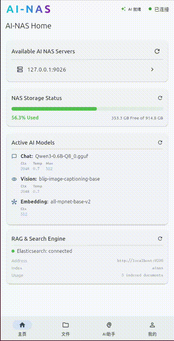

Intelligent storage management with a conversational AI assistant. Manage your NAS using natural language, analyze files, and automate workflows.
AI-NAS brings the power of large language models to your storage infrastructure. Manage files, analyze content, and monitor your system — all through natural language.
Manage your NAS using natural language commands. Ask questions, request file operations, and get instant insights.
Analyze images with AI auto-tagging and visual explanations. Search your photo library using generated tags.
Retrieve and search across documents (PDF, DOCX, TXT) using hybrid semantic + keyword retrieval powered by Elasticsearch.
Instant streaming responses from the AI assistant with server-sent events — no waiting for full generation.
Track storage usage, AI model status, and system health at a glance. One-tap quick actions for common tasks.
Responsive Flutter-based frontend that runs on desktop and mobile platforms with a consistent experience.
AI-NAS automatically generates descriptive tags for your images, making it easy to search and organize your visual content.

Images are automatically tagged by the AI model.
Built with state-of-the-art open source technologies for performance, scalability, and developer experience.
Clone the repository, run the bootstrap script, and you're ready to go.
git clone https://github.com/anomalyco/ainas.git
bash bootstrap.sh --setup
bash bootstrap.sh --backend
bash bootstrap.sh --frontend